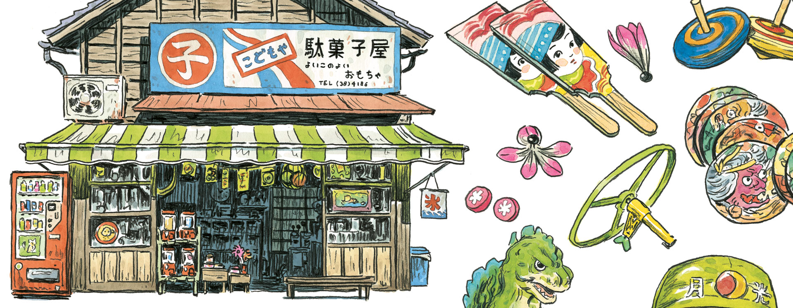

On this page, you'll find our different products available online. We don't sell directly the products by ourselves. Please, follow the links to the publisher's websites to purchase the items.
On this page, you'll find our different products available online. We don't sell directly the products by ourselves. Please, follow the links to the publisher's websites to purchase the items.

Coming in March 2023
In a Japanese village, the inhabitants are entrusted to assist the "shadows" of those who died tragically to find peace. Naoko, a dreamy young woman, is given a year to save the soul of a mysterious man. As the years goes by, Naoko finds herself teetering between the worlds of the living and the dead. Could she be risking her own life to help someone who has already lost his?

Graphic novel 128 pages Cecile and Olivier travel to a remote corner of Japan. Along the way, they purchase an old camera that has the ability to capture images of Japan's invisible spirit world. With their magical camera, they explore the countryside and meet people who tell them about the forgotten ghosts, ghouls and demons. These Yokai, or supernatural beings, are sometimes kind, sometimes mischievous, and sometimes downright dangerous!
Artbook
Discover another face of Japan through the watercolors of Atelier Sentô. Gathering more than 300 watercolors, sketches and prints, this book is a walk off the beaten track, along the rice fields, looking for temples lost in the forest and the spirits that inhabit them.
International shipping Size: 30x40 cm High quality art print created by the French publisher "Les Images Dérisoires" on a Tintoretto Gesso 300gr paper. Each of the 100 prints is numbered, hand stamped and signed.

International shipping Size: 30x40 cm Reproduction of the cover illustration of Onibi graphic novel. High quality art print created by the publisher "Les Images Dérisoires" on a Tintoretto Gesso 300gr paper. Each of the 50 prints is numbered, hand stamped and signed.

International shipping Size: 30x40 cm High quality art print created by the French publisher "Les Images Dérisoires" on a Tintoretto Gesso 300gr paper. Each of the 100 prints is numbered, hand stamped and signed.

International shipping High quality art prints created by Inprnt. You can choose various sizes and frames for the prints.